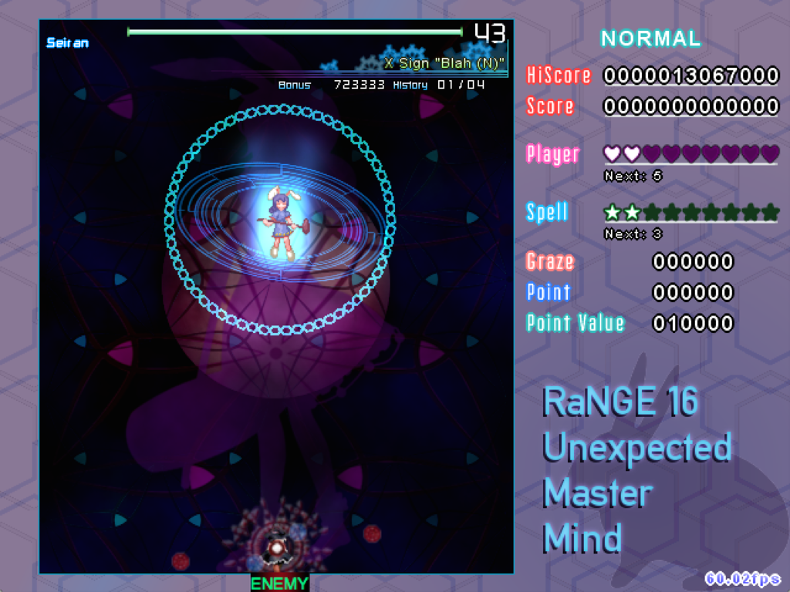

RANGE 16
DESCENT OF THE MOCHI HAMMER
RELEASE INFORMATION
Release Date: January 25, 2016
Download: Download RC-3 (March 25, 2016) [+archive_img]
Install: Place the unarchived directory within the 'script' directory of your copy of Touhou Danmakufu ph3 [.1]
Official Post: Click Here for Information
Contest Page: Click Here for Information
GAMEPLAY AND SYNOPSIS
My RaNGE 16 Contest Entry is a standard Touhou-esque vertical scrolling shooter. The theme of the contest was to use a Stage 1 Boss as a Final Boss, and I chose to make a Seiran boss script. What's different about this contest entry is my usage of SeitenTouji's system - since I used SeitenTouji's package system, this script inherited spell practice, built-in continues, and a full configuration suite. Additionally, there are four difficulties and two players - Marisa (the recommended player), and Reimu. There are a number of Overdrive versions for certain spells as well.
Default starting lives are configurable, and extends are gained every three life fragments (life fragments are obtained when not dying to an attack, spell fragments if you die to an attack).
POSTMORTEM
[January 30, 2016]
In hindsight, I should really pay more attention to difficulty balancing. Also, so much blue and purple. But in the end, despite all the fast bullets and the negative feedback on difficulty (perhaps due in part by the negative stigma surrounding Easy Mode), I feel that this script is one of my better ones. Definitely better than my Sekibanki, definitely better than Ran in overall quality. Sure, Nonspells 3 and 4 are absolute crap and Spell 4 is basically just a throwaway. But hey, at least they're more interesting than Ran's finisher.
[June 10, 2018]
Oh hey! It's June 2018, two and a half years after the initial release of this script! Now for an updated postmortem!
Looking back on the work I've done since releasing this script, it feels like it was so long ago. After all, it *way* a long time ago. Since them, my systems have improved a lot, and that's definitely evident in my more recent works. But this script? Despite being a prime example of how NOT to do RNG (this was made around the same time as Taiga in SeitenTouji, who is notorious for RNG usage), a lot of the attacks as well as the overall feel of this script are some of my best, and I'm surprised at how good it is, even now. Hoping my newer work continues a positive trend!
LEGAL AND CREDITS
The Touhou Project is owned by Team Shanghai Alice (ZUN). Various graphics in this game are not original and originate from official Touhou Project games.
I do not and will not allow unauthorized redistribution of this game and/or use of original code/assets without express permission.